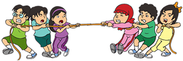
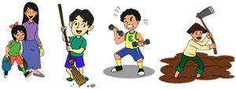
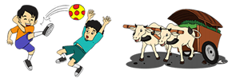
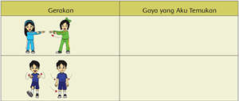
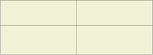
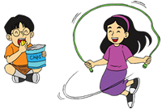
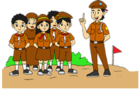
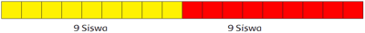
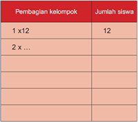
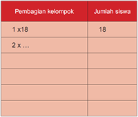

 |
||
Pada Hari kemerdekaan, SDN Nusantara 01 menyelenggarakan lomba tarik tambang.
Udin dan teman-teman mengikuti lomba tersebut. Lomba ini diikuti oleh dua kelompok
pemain. Masing-masing kelompok berusaha untuk memenangkan permainan. Setiap
orang berusaha untuk menarik tambang sekuat mungkin. Untuk menambah kekuatan,
mereka pun menggunakan kaki untuk menahan tambang agar tambang tidak tertarik.
Amati gambar berikut. Dapatkah kamu menemukan contoh gaya otot lainnya?   |
|
Kamu baru saja melakukan senam dengan guru olahragamu. Temukan gaya otot di setiap gerakan. Selain gaya otot, coba temukan gaya lainnya dan tuliskan pada tabel!  |
||
|  |
|
Gaya otot dapat kita temukan di hampir semua kegiatan mahluk hidup. Agar kamu tahu lebih banyak tentang gaya otot, ayo bekerjasama dengan kelompokmu untuk menghasilkan tulisan.
|
||
 Dari kegiatan di atas, apakah kalian menemukan banyak contoh tentang gaya otot dan gaya lainnya? Jenis gaya apa yang kalian temukan lebih banyak? |
Setelah kegiatan bekerjasama tadi, tuliskan pengalaman yang kamu lakukan dalam
kelompokmu sehingga tujuan kalian membuat tugas tersebut tercapai. Setiap orang mempunyai kemampuan yang berbeda-beda. Saling memahami kemampuan yang dimiliki, serta bersatu dalam mencapai tujuan, dapat membantu kamu menuliskan cerita tentang gaya. |
Contoh lain pemanfaatan gaya otot adalah pada kegiatan Pramuka, seperti kegiatan tali–temali dan baris-berbaris. 
|
||
Siti dan Dayu adalah anggota pramuka di sekolahnya. Anggota pramuka kelas IV dan
V SD Nusantara mengadakan Persami (Perkemahan Sabtu Minggu). Anggota siswa
kelas IV berjumlah 12 orang dan kelas V berjumlah 18 orang.
Kemungkinan 1 :
Siswa dikelompokkan menjadi 2 kelompok.
2 x 6 = 12
Kemungkinan 2 :
Kemungkinan 3 :
Kemungkinan 4 :
Kemungkinan 5 :
Kemungkinan 6 :
Berapa kemungkinan kelompok yang dapat disusun dari siswa kelas V? Kemungkinan 1: Siswa dikelompokkan menjadi 2 kelompok. 2 x 9 = 18  Kemungkinan 2: Kemungkinan 3: Kemungkinan 4: Kemungkinan 5: Kemungkinan 6: Tuliskan kelompok-kelompok yang dapat dibentuk oleh siswa kelas IV .
2, 3, 4, ....  Bentuklah perkalian dari kelompok siswa kelas V dalam tabel di bawah ini! 
Perkalian yang menyatakan pembagian kelompok jumlah siswa dalam perkalian
tersebut dinamakan faktor. |
|
|
|
Pada saat kamu ke pasar bersama orang tua, temukanlah jenis gaya yang ada. |